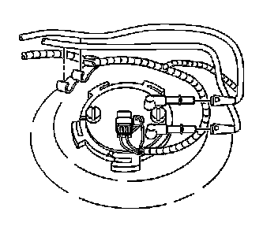

Fuel Hoses/Pipes Replacement - Filter to Tank
Fuel Hoses/Pipes Replacement - Filter to Tank
Removal Procedure
1. Remove the fuel tank. Refer to Fuel Tank Replacement (Service and Repair) .

Notice: Clean all of the following areas before performing any disconnections in order to avoid possible contamination in the system:
* The fuel pipe connections
* The hose connections
* The areas surrounding the connections
2. Disconnect the following from the primary fuel tank module:
* The pressure hose
* The return hose
3. Disconnect the hoses from the retaining feature at the fuel tank.
Installation Procedure
1. Clean any contamination from the male pipe ends of the primary fuel tank module.
2. Connect the hoses to the retaining feature at the fuel tank.
3. Connect the following to the primary fuel tank module:
* The pressure hose
* The return hose
4. Install the fuel tank. Refer to Fuel Tank Replacement (Service and Repair) .